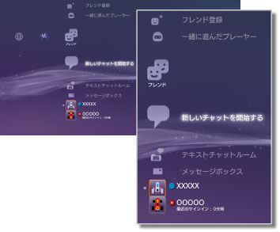

フレンド > フレンドカテゴリーについて
フレンドカテゴリーについて
この機能を使うには、システムソフトウェアのアップデートが必要になる場合があります。
他のPS3™ユーザーと、ネットワークを通じてチャットやメッセージの送受信を楽しめます。この機能を使うには、PlayStation®Networkのアカウントを作成（サインアップ）する必要があります。 （フレンド）では、次のアイコンが表示されます。操作状況によって、表示されるアイコンは異なります。
（フレンド）では、次のアイコンが表示されます。操作状況によって、表示されるアイコンは異なります。

 |
ブロックリスト | ブロックリストに登録した相手の一覧が表示されます。 |
|---|---|---|
 |
フレンド登録 | フレンドリストに登録するための依頼メッセージを送信できます。 |
 |
一緒に遊んだプレーヤー | PlayStation®3規格ソフトウェアのオンラインゲーム*で一緒に遊んだプレーヤーの一覧が表示されます。ここから相手にメッセージを送ったり、フレンド登録依頼ができます。 |
 |
新しいチャットを開始する | チャットを開始できます。 |
 |
テキストチャットルーム | テキストチャットルームがあるときに表示されます。新しいテキストチャットルームがあるときは が表示されます。 が表示されます。 |
 |
AVチャットルーム | AVチャットをしているときに表示されます。 |
 |
メッセージボックス | メッセージを作成したり、受信／送信したメッセージを見られます。 |
 |
（自分のオンラインID） | PlayStation®Networkのアカウントで設定している自分のアバターが表示されます。 |
|
（フレンド名） | フレンドリストに登録した相手がいるときに表示されます。ここから、登録した相手とチャットやメッセージの送受信をすることができます。 |
| * |
ゲームによっては対応していない場合があります。 |
|---|
ヒント
- PS3™では、フレンドリストに登録した相手のことを［フレンド］と呼びます。また、（フレンド）でやりとりできるメールのことを、［メッセージ］と呼びます。
 （一緒に遊んだプレーヤー ）に表示されるのは、50人までです。50人を超えると、古い相手から自動的に削除されます。
（一緒に遊んだプレーヤー ）に表示されるのは、50人までです。50人を超えると、古い相手から自動的に削除されます。- 音声チャットをするには、別売りの音声入出力機器（ヘッドセットなど）が必要です。ビデオチャットをするには、音声入出力機器と別売りのUSBカメラが必要です。
- PS3™では、USBヘッドセット／Bluetooth®ヘッドセット／EyeToy™ USBカメラ／PlayStation®Eye／USBビデオクラスに対応したUSBカメラが使えます。
- USBハブを使ってUSBカメラを接続するときは、USB2.0に対応したハブを使ってください。USB2.0に対応していないハブでは、画像が乱れたり、表示されなかったりすることがあります。
- 周辺機器の対応機種および使いかたについては、機器の販売元へお問い合わせください。